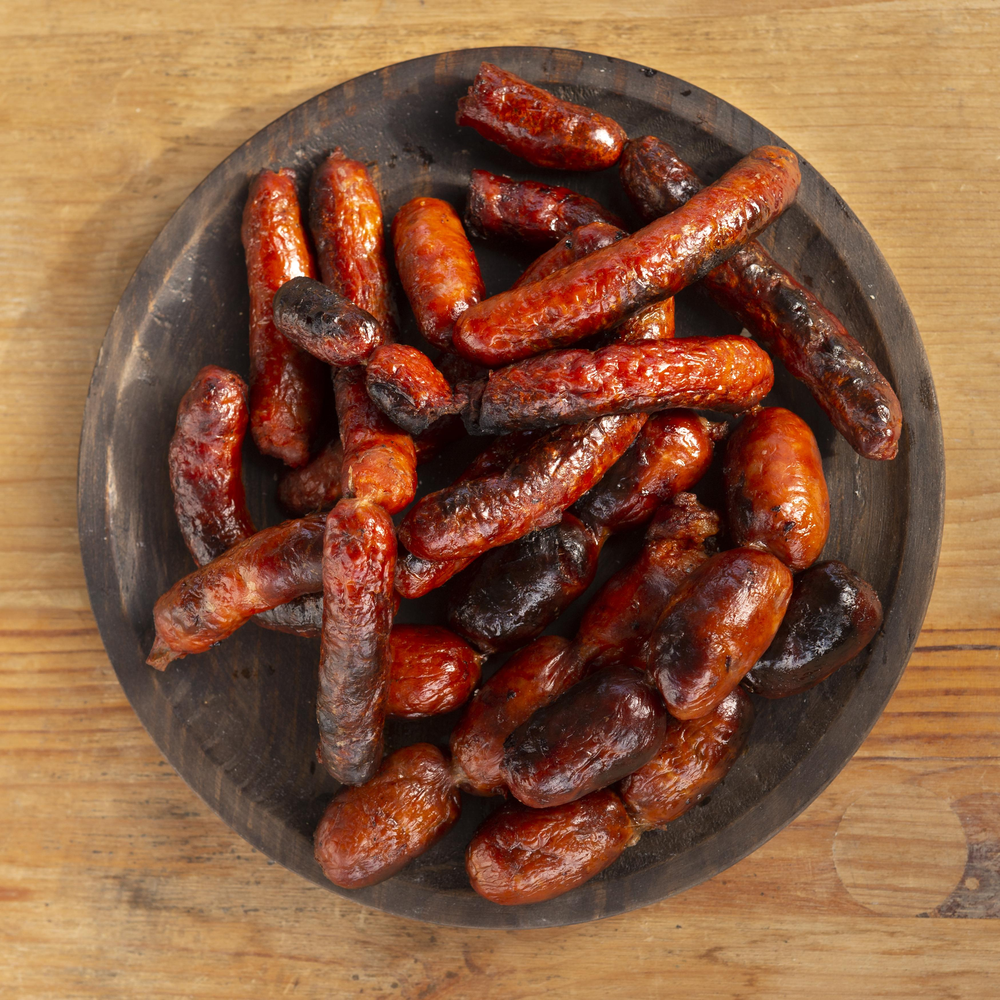

Click The Button Below To Order
Click here to orderChorizo is a flavorful, spicy sausage, most notably known for its deep red color and smoky flavor imparted by paprika. It is a staple in many cuisines, particularly in Spanish and Mexican dishes. Chorizo can be made from pork, beef, or a combination of meats, and is often seasoned with garlic, cumin, and other spices. It can be enjoyed fresh or cured, and is commonly used in tacos, paellas, and breakfast dishes. Whether grilled, sautéed, or crumbled into dishes, chorizo adds a robust flavor that enhances any meal. The price is $40 per kilogram, and it is available for order in 1 kg increments.